具有危險性之機械及設備安全相關法規簡介
高壓氣體．起重升降機具．鍋爐與壓力容器
課程大綱
- 高壓氣體勞工安全規則
- 高壓氣體定義與分類
- 製造、供應、儲存、運輸及消費安全
- 設備安全設施與安全管理
- 起重升降機具安全規則
- 危險性機械定義與分類
- 固定式、移動式起重機安全管理
- 吊掛作業與搭乘設備規範
- 鍋爐及壓力容器安全規則
- 危險性設備定義與分類
- 鍋爐與壓力容器之操作管理
- 安全閥與附屬品管理
第一部：高壓氣體勞工安全規則
高壓氣體生命週期與法規章節對照
| 生命週期 | 階段定義與管理核心 | 對應法規章節 |
|---|---|---|
| 一、生產分裝 | 將氣體處理成高壓狀態，以及灌注於儲槽或容器。 | 第二章 製造安全設施 |
| 二、移轉 | 透過容器或導管，將高壓氣體的所有權移轉給消費者。 | 第三章 供應安全設施 |
| 三、儲存 | 將氣體滯留存放於固定式「儲槽」或移動式「容器」中。 | 第四章 儲存安全設施 |
| 四、運送 | 以槽車、一般車輛載運，或透過長途地下導管輸送。 | 第五章 運輸安全設施 |
| 五、降壓使用 | 將高壓氣體「減壓」成非高壓狀態，以供後續燃燒、反應或溶解使用。 | 第六章 高壓氣體消費設施 |
| 六、終點 | 將設備或容器內部的高壓氣體向大氣或環境中「緩緩擴散」的機制。 | 第九章 可燃性氣體等之廢棄 |
| 管理 | 依廠場規模設置專責的負責人與作業主管，建立監督與自動檢查機制。 | 第十章 安全管理 |
高壓氣體生命週期
{kind=link}
高壓氣體的法定定義
《高壓氣體勞工安全規則》第2條 - 高壓氣體包含四類：
| 類型 | 條件 | |
|---|---|---|
| 氣體 | 壓縮氣體 (不含乙炔) | 常用溫度下，表壓力≧10 kg/cm² (1 MPa) 或 35℃時壓力≧10 kg/cm² |
| 壓縮乙炔氣 | 常用溫度下，表壓力≧2 kg/cm² (0.2 MPa) 或 15℃時壓力≧2 kg/cm² |
|
| 液體 | 液化氣體 | 常用溫度下，表壓力≧2 kg/cm² 或 35℃以下壓力達2 kg/cm² 之液化氣體 |
| 指定液化氣體 | 35℃時壓力>0 kg/cm² 之液化氯化氫、溴甲烷、環氧乙烷等 (具毒性/爆炸性) |
常用溫度：指高壓氣體容器、裝置等通常使用或操作之溫度。
高壓氣體的法定定義
{kind=link}
高壓氣體判定計算實例
理想氣體公式：\(PV = nRT\) ⇒ \(P/T = \text{定值}\)
例：某氣體於 0℃ 時表壓力 9 kg/cm²，推算 35℃ 時壓力是否達 10 kg/cm² 以上？
\[\begin{aligned} P_{1} &= (P_{0}+1.033) \times \frac{273+35}{273} - 1.033 \\[2mm] &= (9+1.033) \times \frac{308}{273} - 1.033 \\[2mm] &= 10.286 \ \text{kg/cm}^2 \quad \Rightarrow \text{屬於高壓氣體} \end{aligned}\]
判斷練習
(1) 15℃、1.8 kg/cm² 之乙炔氣體？ ⇒ 未達 2 kg/cm²，不屬高壓氣體。
(2) 25℃、9.9 kg/cm² 之氫氣？ ⇒ 不屬高壓氣體，但需推算35℃壓力，若>10 kg/cm²，屬高壓氣體。
(灌氣/殘氣)容器、(氣體、高壓氣體、處理)設備

減壓設備與處理能力、加氣站、冷凍機器、原料氣體
{kind=link}
儲存能力計算方式
| 設備類型 | 儲存能力公式 | 參數說明 |
|---|---|---|
| 壓縮氣體儲存設備 | \(Q = (P+1) \times V_1\) | \(Q\)：能力 (m³) \(P\)：35℃(乙炔15℃)最高灌裝壓力(kg/cm²) \(V_1\)：內容積(m³) |
| 液化氣體儲存設備 | \(W = 0.9 \times w \times V_2\) | \(W\)：能力 (kg) \(w\)：常用溫度下比重 (kg/L) \(V_2\)：內容積(L) |
| 液化氣體容器 | \(W = V_2 / C\) | \(C\)：中央主管機關指定值 |
高壓氣體儲存
{kind=link}
儲存能力與安全
{kind=link}
高壓氣體之「製造」定義
製造並非化學合成，而是人為處理生成高壓氣體狀態，包含：
- 改變氣體壓力 ( 高 ⟺ 低 )
- 將非高壓氣體加壓至 10 kg/cm² 以上
- 使高壓氣體壓力進一步上升
- 降壓處理、灌裝、分裝
- 改變氣體狀態 ( 氣 ⟺ 液)
- 使氣體液化 (飽和蒸氣壓 ≥2 kg/cm²)
- 將液化氣體汽化為高壓氣體 (壓力 ≥10 kg/cm²)
製造(第2章 )
{kind=link}
製造事業單位分類
| 類別 | 條件 |
|---|---|
| 甲類製造事業單位 | 一日處理氣體容積 ≥30 m³ (0℃, 0kg/cm²狀態) 或 一日冷凍能力 ≥20 公噸 |
| 乙類製造事業單位 | 非屬甲類，但冷凍能力 ≥3 公噸 |
製造事業單位分類
{kind=link}
製造設備之安全距離
- 可燃性氣體製造設備與煙火設備：（設備與燃燒設備）
- 應保持 8 公尺以上，或設置防止氣體流竄之防火牆(高度≥2m)。
- 可燃性氣體高壓設備與其他可燃性氣體高壓設備：（設備間）
- 5 公尺以上。
- 可燃性與氧氣製造設備之高壓設備： （設備與氧氣設備）
- 10 公尺以上。
- 儲槽間距：
- 1 m 或 最大直徑和之 1/4 (取較大值)。
製造設備之安全距離
{kind=link}
防液堤設置規定 (第37條)
下列設備四周應設置防液堤，防止液化氣體洩漏流竄：
- 儲存能力 ≥ 1,000 公噸之液化可燃性氣體儲槽
- 儲存能力 ≥ 1,000 公噸之液化氧氣儲槽
- 儲存能力 ≥ 5 公噸之液化毒性氣體儲槽
- 以毒性氣體為冷媒，承液器內容積 ≥ 10,000 公升之冷媒設備
防液堤內側及堤外 10 公尺內不得設置非許可設備 (液化毒性氣體依公式計算距離L)。
液化溴甲烷儲槽防液堤外距離L計算
\[L = \frac{4}{995} (X - 5) + 6\]
- \(X\)：儲存能力 (公噸) ，適用於 毒性氣體中之可燃性氣體
- \(L\)：防液堤外維持距離 (公尺)
例：儲存能力 5 公噸之液化溴甲烷
\[L = \frac{4}{995}(5-5)+6 = 6 \ \text{公尺}\]
若屬「前述以外之毒性氣體」則公式為 \(L = \frac{4}{995}(X - 5) + 4\)。
耐壓試驗與氣密試驗
- 耐壓試驗：高壓氣體設備應以常用壓力之 1.5 倍以上測試
- 氣密試驗：以常用壓力以上測試。
- 例外：經重新檢查或構造檢查合格之高壓氣體特定設備可免。
問題研討1 (教材，題目省略)解答
(2)溴甲烷同時屬於「可燃性氣體」與「毒性氣體」。因此，計算5噸液化溴甲烷儲槽之防液堤外側應維持距離時，應適用「毒性氣體中之可燃性氣體」之公式。
- 計算： \(L=(4/995)×(X−5)+6 =(4/995)×(5−5)+6=6\)（公尺）。
(3)設置於防液堤內側之規定設備（試列6項）： 依據法規第37-1條，防液堤內側除下列設備及儲槽之附屬設備外，不得設置其他設備（列出其中6項）：
與該儲槽有關之低溫儲槽之輸液設備。
惰性氣體儲槽。
水噴霧裝置。
氣體漏洩檢知警報設備之感應部。
除毒設備之吸收洩漏氣體之部分。
照明設備。 (備註：其他合法設備尚包含計測設備、排水設備、配管及配管架臺等。)
耐壓試驗與氣密試驗
{kind=link}
緊急遮斷裝置 (第53條)
內容積 ≥ 5,000 公升之液化氣體儲槽 (可燃性、毒性或氧氣)，其配管應於距離儲槽外側 5 公尺以上安全處所設置可操作之緊急遮斷裝置。
- 僅用於接受液態氣體之配管，得以逆止閥代替。
- 液氧儲槽供醫療用者，得另裝旁通閥 (常閉鉛封)。
灌裝作業重要規定 (節錄第71條)
- 液化氣體灌注儲槽：容量 ≤ 常用溫度下槽內容積之 90% ；液化毒性氣體儲槽需有自動警報。
- 乙炔灌注：灌裝壓力 ≤ 25 kg/cm²，灌注後靜置至 15℃ 壓力 ≤ 15.5 kg/cm²。
- 環氧乙烷灌注：事前以氮氣或二氧化碳置換，不得含有酸或鹼。
- 液化石油氣灌注：
- 不得灌注於內容積 ≤ 1,000 公升之容器。
- 應使用合格容器或儲槽，確認液面計或過裝防止裝置。
- 卸除配管前須緩慢排放剩餘氣體至無虞危險。
灌裝作業重要規定
{kind=link}
供應安全設施(第3章 )
高壓氣體之儲存安全 (第4章 113、116條)
儲槽儲存
通風良好，四周2公尺內禁煙火及危險物。
液化氣體 ≤ 槽內容積 90%。
儲存能力 ≥ 100 m³ 或 1 公噸須監測沉陷。
容器儲存
可燃性或毒性氣體容器須通風良好。
氰化氫容器每日檢點，儲存不得超過 60 日 (純度≥98%未著色除外)。
不得固定或積載於船舶、車輛 (法定例外如滅火用二氧化碳等可)。
高壓氣體之儲存安全
{kind=link}
高壓氣體運輸(第5章 )
高壓氣體之運輸依據載體的不同，分為3大類
「固定於車輛之容器」（如：大型槽車）
「非固定於車輛之容器」（如：一般載運之瓦斯鋼瓶）
「導管」（如：長途地下管線）
註：細節可查法規與讓AI協助
高壓氣體運輸
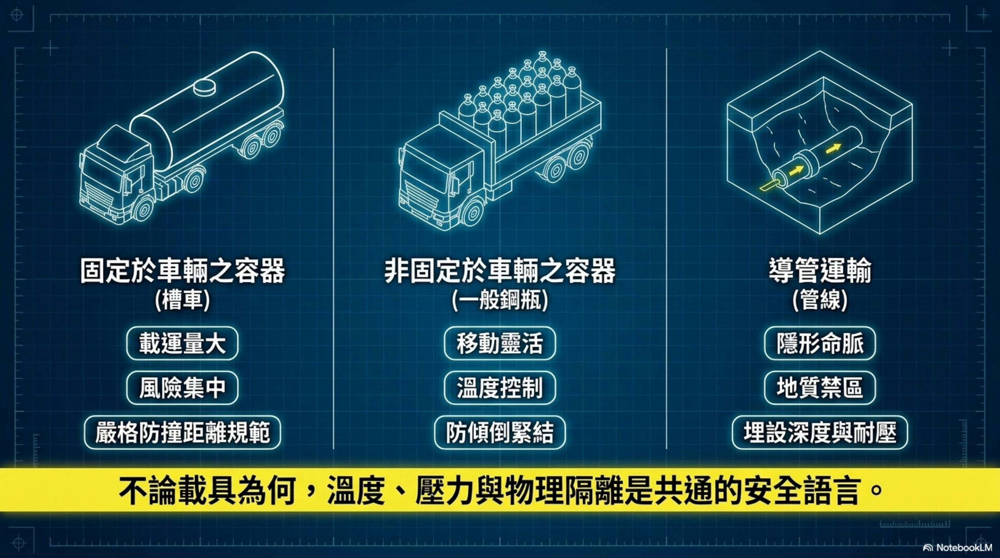 |
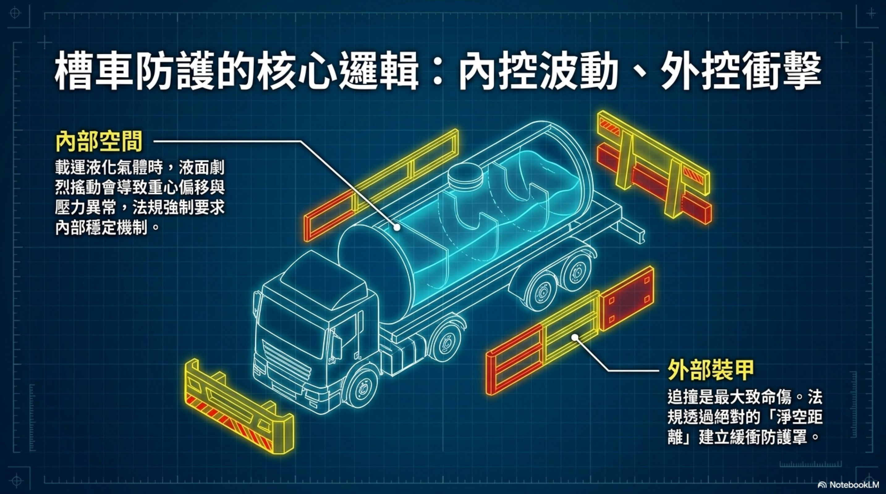 |
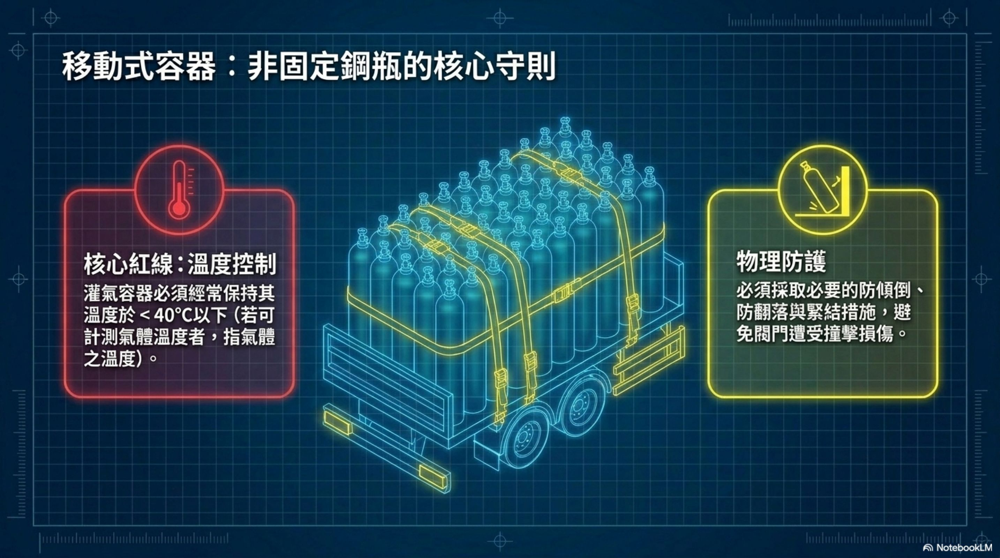 |
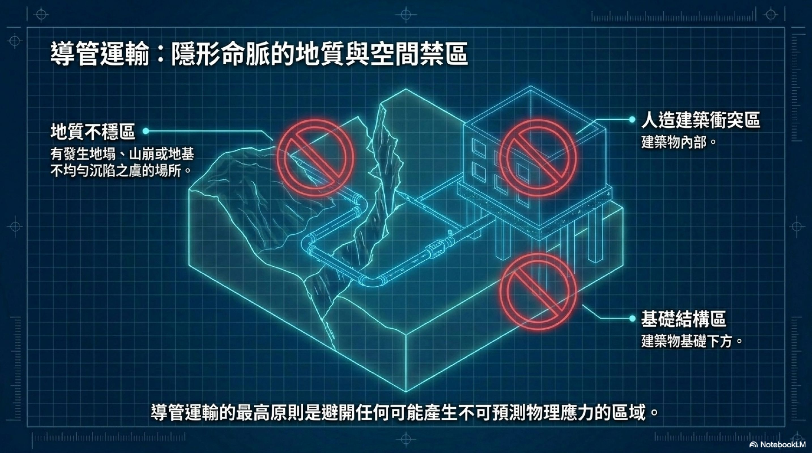 |
{kind=link}
{kind=link}
{kind=link}
{kind=link}
高壓氣體之消費(第6章)
- 特定高壓氣體 (壓縮氫、壓縮天然氣、液氧、液氨、液氯、液化石油氣) 消費事業單位應選任 消費安全作業主管。
- 液氯或液氨消費設備須設置除毒措施 (防止擴散裝置、吸收設備、防護具)。
- 可燃性氣體消費設備應採取靜電消除措施。
- 容器串接供廠場使用 (液化石油氣)：
- 總容量 ≤ 1000 公斤
- 容器及氣化器設於室外
- 設置漏洩及地震偵測自動緊急遮斷裝置
高壓氣體之消費安全
{kind=link}
高壓氣體之消費安全
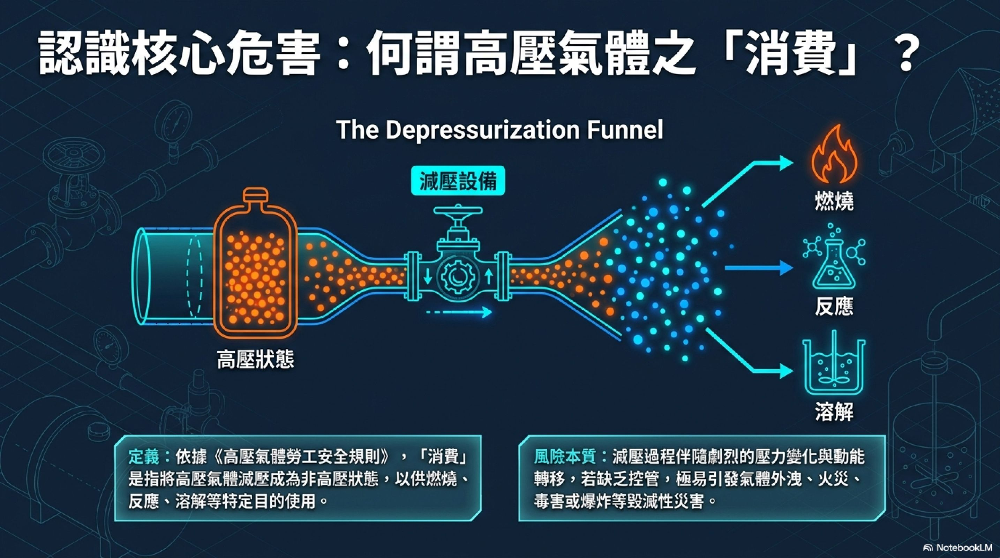 |
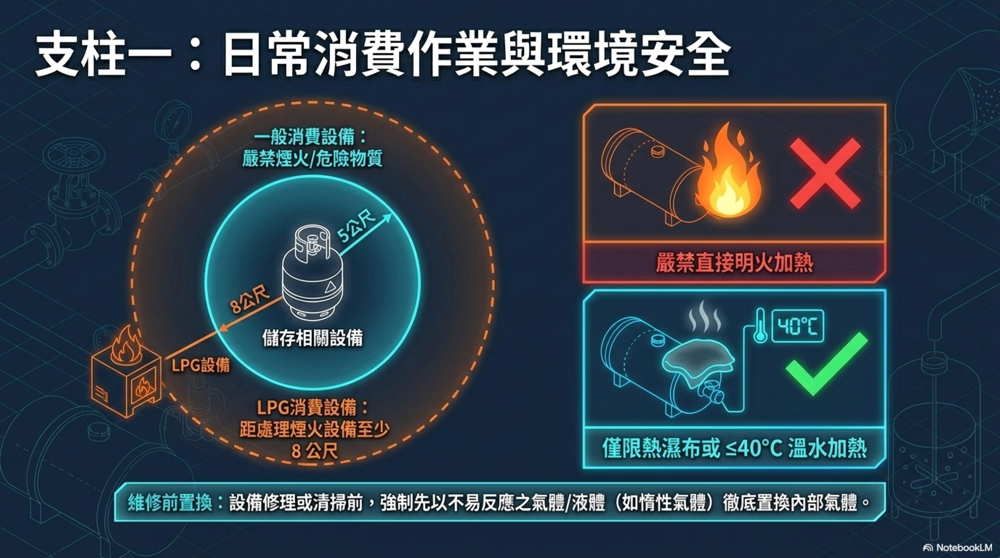 |
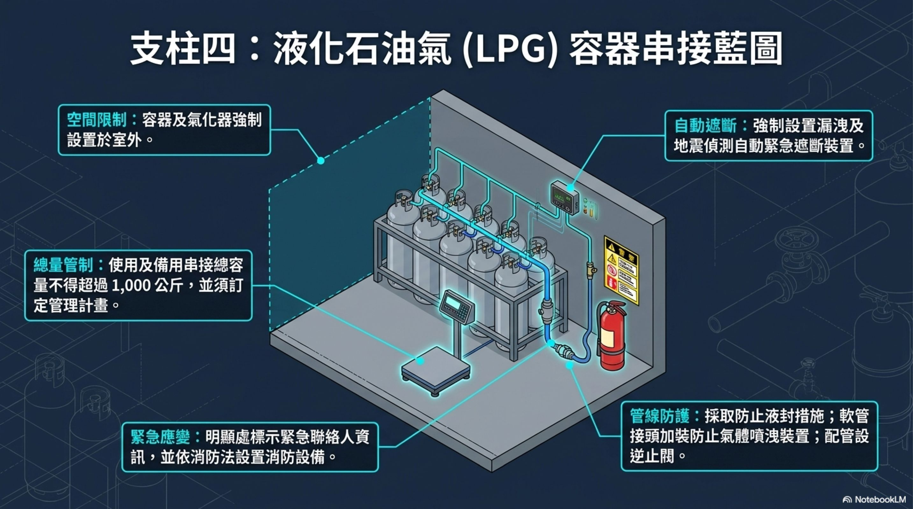 |
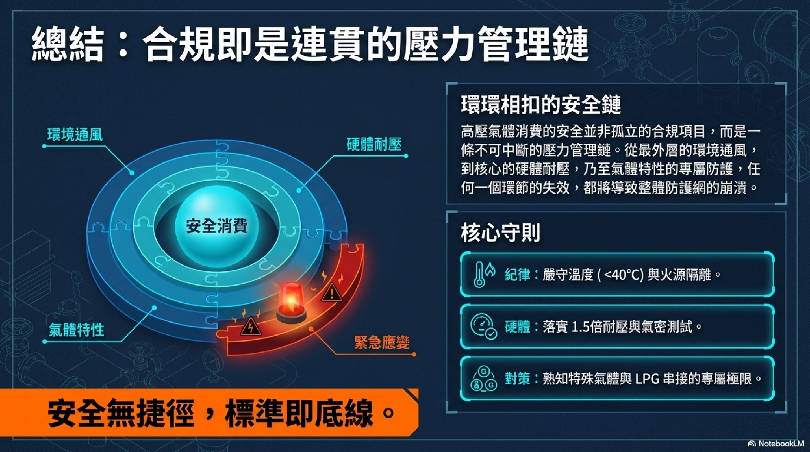 |
{kind=link}
{kind=link}
{kind=link}
{kind=link}
高壓氣體廢棄安全(第9章)
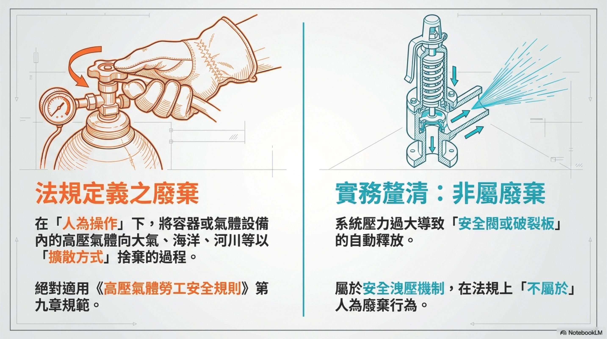 |
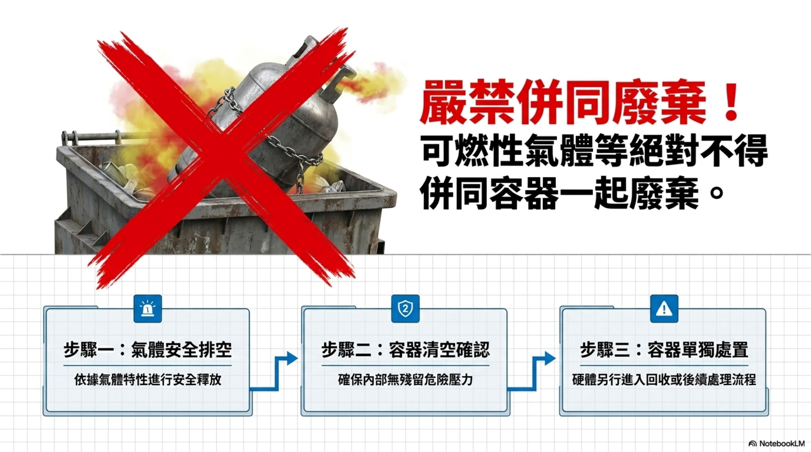 |
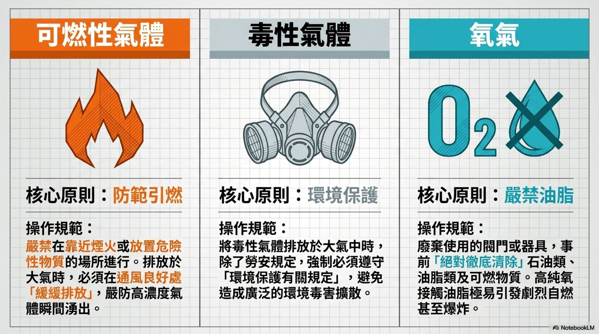 |
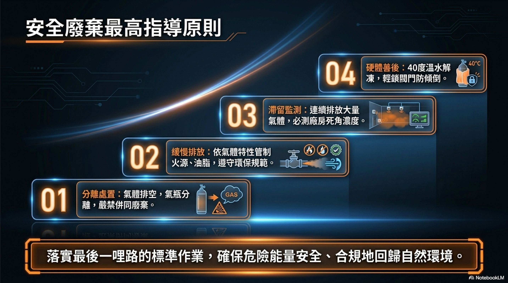 |
{kind=link}
{kind=link}
{kind=link}
{kind=link}
冷凍機器(第7章)
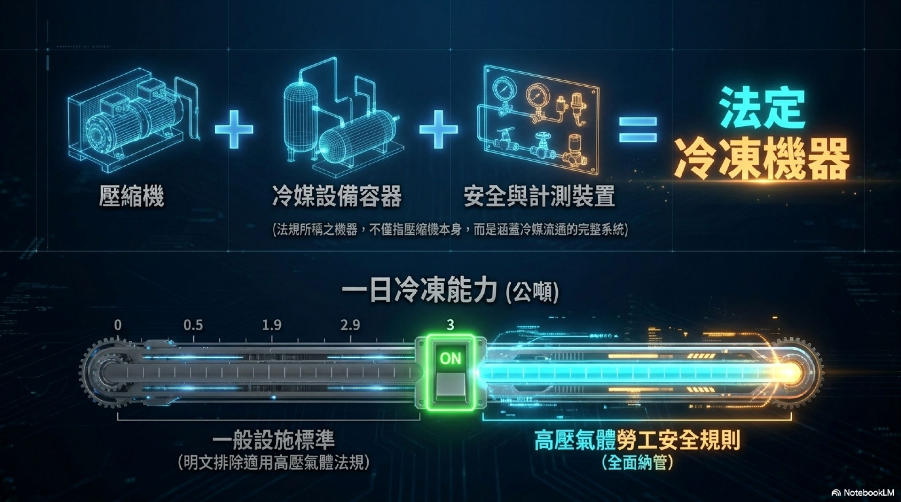 |
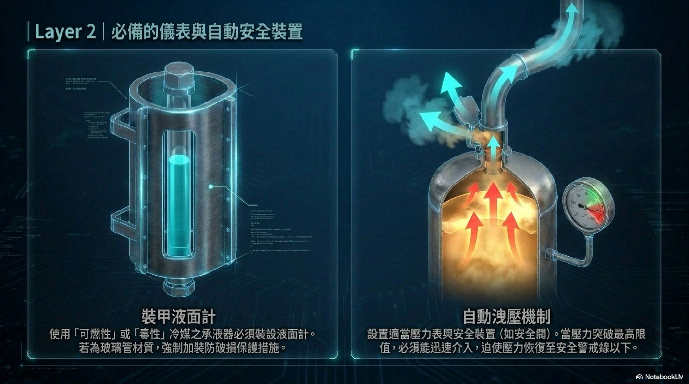 |
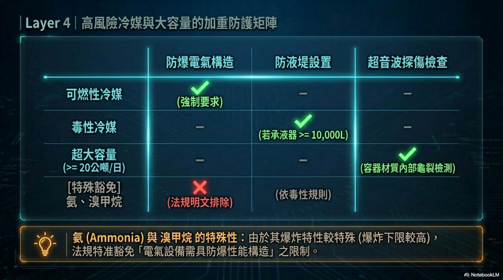 |
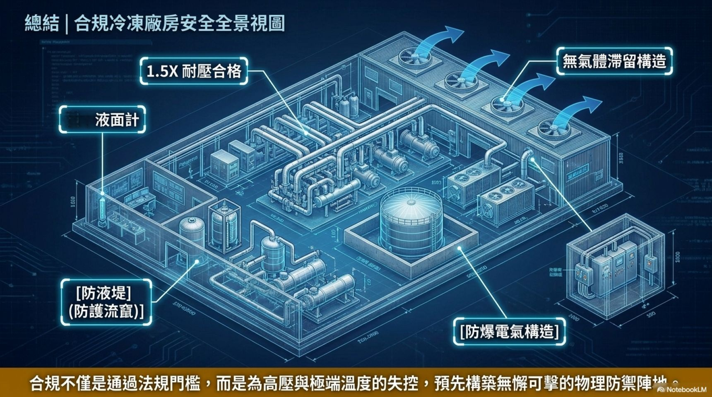 |
{kind=link}
{kind=link}
{kind=link}
{kind=link}
安全管理(第10章)
| 事業單位類型 | 應選任人員 |
|---|---|
| 甲類製造 | 製造安全負責人 + 製造安全主任 + 製造安全作業主管 |
| 冷凍用高壓氣體製造 | 製造安全負責人 + 甲/乙/丙種製造安全作業主管 |
| 供應事業單位 | 供應安全作業主管 |
| 特定高壓氣體消費 | 消費安全作業主管 |
| 特定液化石油氣消費 | 消費安全作業主管 |
安全管理組織
{kind=link}
高壓氣體不適用範圍 (第241條節錄)
- 高壓鍋爐及其導管內之高壓蒸氣
- 鐵路、船舶、航空器、礦場、原子能設施內之高壓氣體
- 冷凍能力未滿 3 公噸之冷凍設備內之高壓氣體
- 內燃機起動、輪胎充氣等壓縮裝置內之壓縮氣體
- 清涼飲料水等 (液化氣體質量佔比 ≤15% 且 35℃ 壓力 ≤6 kg/cm²)
高壓氣體不適用範圍
{kind=link}
第二部：起重升降機具安全規則
危險性機械定義
(危險性機械及設備安全檢查規則 第3條)
下列容量以上之危險性機械，未經檢查合格不得使用：
| 機械種類 | 檢查基準 |
|---|---|
| 固定式起重機 | 吊升荷重 ≥3 公噸，或斯達卡式 ≥1 公噸 |
| 移動式起重機 | 吊升荷重 ≥3 公噸 |
| 人字臂起重桿 | 吊升荷重 ≥3 公噸 |
| 營建用升降機 | 設置於營建工地者 |
| 營建用提升機 | 導軌或升降路高度 ≥20 公尺 |
| 吊籠 | 載人用吊籠 |
危險性機械
{kind=link}
ChatGPT產出，第3及6圖有誤，課堂展示正確圖示
中型起重升降機具 (第3條)
| 機具 | 容量範圍 |
|---|---|
| 中型固定式起重機 | 吊升荷重 0.5~3 公噸 (斯達卡式 <1 公噸) |
| 中型移動式起重機 | 吊升荷重 0.5~3 公噸 |
| 中型人字臂起重桿 | 吊升荷重 0.5~3 公噸 |
| 中型升降機 | 積載荷重 0.25~1 公噸 |
| 中型營建用提升機 | 導軌高度 10~20 公尺 |
吊升荷重未滿0.5公噸的固定式起重機、移動式起重機及人字臂起重桿，以及積載荷重未滿0.25公噸的升降機、營建用提升機及簡易提升機，均不適用《起重升降機具安全規則》。
這類未達容量標準的起重升降機具，依法適用《職業安全衛生設施規則》來辦理各項安全衛生管理與防護措施。
《職業安全衛生設施規則》之起重升降機具
安全管理與防護措施重點如下：
標示與負荷管制。
指揮與人員避險：防止吊掛物通過人員上方，並禁止人員進入吊掛物下方。
設備安全防護裝置：
起重機具： 設有防止物體脫落、過捲預防裝置（>0.25公尺，直動式>0.05公尺），鋼索設置顯著標示或警報裝置。
升降機： 各樓層出入口應裝設連鎖功能之安全門，終點極限開關與緊急剎車等各項安全裝置。
吊具強度與安全係數： 吊鉤、鉤環及附屬零件之安全係數>4；吊掛用鋼索之安全係數>6。
吊具汰換與禁用限制：
鋼索如有一撚間素線截斷達10%以上、直徑減少達7%以上、扭結、顯著變形或腐蝕等任一情況，一律禁用。
吊鏈如延伸長度超過原長度5%、斷面直徑減少超過10%或產生龜裂，禁止使用。
已變形或龜裂之吊鉤與鉤環、斷股或損傷腐蝕之纖維索及帶，均不得供作吊掛使用。
重要名詞定義
- 吊升荷重：依構造及材質，所能吊升之最大荷重。
- 額定荷重：吊升荷重扣除吊鉤、抓斗等吊具重量後之荷重。
- 具伸臂者依傾斜角、長度、吊運車位置決定最大荷重後再扣除吊具重。
- 積載荷重：升降機、提升機、吊籠等乘載人員或荷物上升之最大荷重。
- 額定速率：額定荷重下之最高運行速率 (上升、直行、迴轉、橫行)。
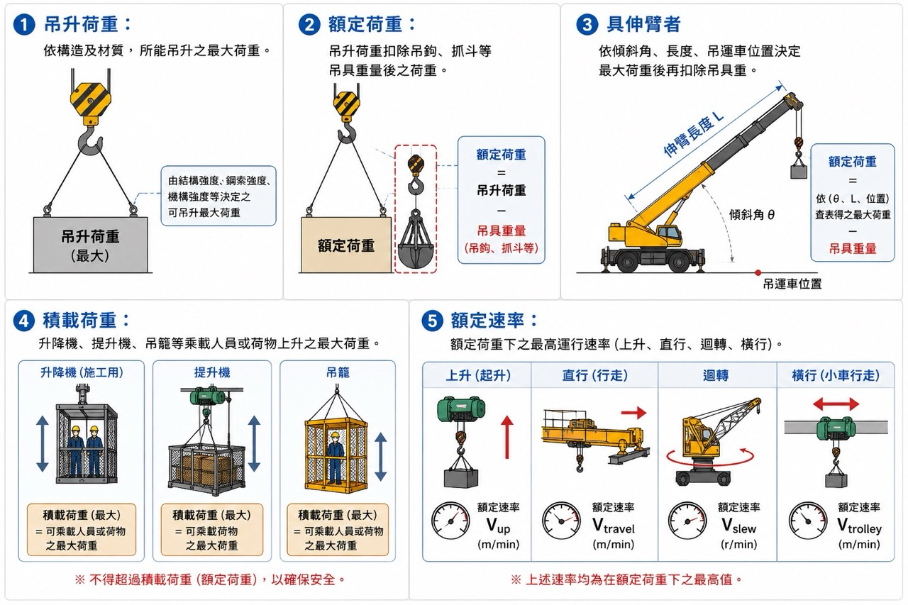 |
| AI產出，部分可能有誤，課堂講解。 |
{kind=link}
固定式起重機使用限制
- 不得超過額定荷重 (第10條) – 必要時可經荷重試驗(1.25倍)並報准放寬。
- 搭乘設備：吊物為限，不得乘載或吊升勞工 (第19條)。但特殊情況例外：
- 貨櫃裝卸、船舶維修、高煙囪施工等無替代方法
- 臨時性、小規模、短時間、作業性質特殊
- 且已採取防止墜落措施
移動式起重機防止翻倒措施 (第29~32條)
作業前應調查地形、地質、作業空間、荷重，決定：
- 作業方法、吊掛方法、運搬路徑
- 軟弱地盤鋪設鐵板、墊料，使用外伸撐座
- 指派指揮者，建立作業指揮體系
外伸撐座使用原則：
- 應伸至最大極限位置 - 若受限無法全伸，需有過負荷預防裝置對應外伸寬度自動降低額定荷重，或明細表已提供較低額定荷重值。
搭乘設備乘載勞工之特殊許可
移動式起重機允許乘載勞工之條件 (第35條但書)： （搭乘設備）
- 貨櫃裝卸、船舶維修、高煙囪施工等無其他安全作業替代方法
- 或 臨時性、小規模、短時間、作業性質特殊
- 且經採取防止墜落措施：
- 搭乘設備防止翻轉及脫落
- 設安全母索，勞工佩戴全身背負式安全帶 (CNS 14253-1)
- 最大荷重 (自重+人員+積載) ≤ 作業半徑對應額定荷重之 50%
- 下降採動力下降
- 垂直高度＞20公尺 禁止使用直結式搭乘設備 (除非設無線電及防碰撞警報)
搭乘設備之構造要求 (第20條、第36條)
- 足夠強度，無損傷、變形、腐蝕
- 周圍設置高度 90 公分以上扶手、中欄杆及腳趾板
- 懸吊用鋼索安全係數 ≥ 10；吊鏈、吊帶及其支點 ≥ 5
- 明顯標示 自重及 最大荷重
Note
為防止墜落與翻覆事故，雇主及作業人員必須嚴格遵守勞動部「起重機吊掛搭乘設備搭載或吊升人員作業注意事項」及相關安全規範。
勞動部修訂「起重升降機具安全規則」，強化搭乘設備作業安全。
吊掛作業人員資格
- 應僱用曾受吊掛作業訓練合格者 (第62條)
- 但已受吊升荷重 3 公噸以上起重機具操作人員訓練合格或具技能檢定技術士資格者，可擔任吊掛作業。
- 起重機操作及吊掛作業應分別指派，例外：
- 地面按鍵操作之固定式起重機
- 積載型卡車起重機 → 可由操作者一人兼任。
吊掛用具安全係數
| 用具 | 安全係數 |
|---|---|
| 鋼索 | ≥ 6 |
| 吊鏈 | ≥ 4 (符合特定伸長率及抗拉強度) 或 ≥ 5 (其他) |
| 吊鉤 | ≥ 4 |
| 馬鞍環 | ≥ 5 |
安全係數（Safety Factor, SF）之計算：
\(安全係數=\frac{斷裂荷重}{最大荷重}\)
Note
禁止使用之鋼索、吊鏈 (第68、69條)
鋼索有下列情形之一不得使用： （示意圖）
一捆間 10% 以上素線截斷
直徑減少 ≥ 7%
顯著變形或腐蝕
已扭結
吊鏈有下列情形之一不得使用：（示意圖）
延伸長度 > 製造時 5%
斷面直徑減少 > 製造時 10%
有龜裂
升降機與吊籠安全重點
- 升降機 (第77條)：
- 終點極限開關。
- 緊急停止裝置須維持效能。
- 不得擅自自外部開啟門扉。
- 吊籠 (第99、102條)：
- 懸吊於建築物應固定於足夠強度處。
- 勞工於工作台作業時，應佩戴安全帽及全身背負式安全帶。
- 營建用提升機 (第87條)：不得乘載人員 (檢修調整除外)。
第三部：鍋爐及壓力容器安全規則
危險性設備定義
(危險性機械及設備安全檢查規則 第4條)
下列容量以上之危險性設備，未經檢查合格不得使用：
鍋爐
最高使用壓力 >1 kg/cm² 或 傳熱面積 >1 m² (特定條件 >3.5 m²)
水頭壓力 >10 m 或 傳熱面積 >8 m² (熱水鍋爐/熱媒鍋爐)
貫流式：最高使用壓力 >10 kg/cm² 或 傳熱面積 >10 m²
壓力容器 (第一種壓力容器)
最高使用壓力 >1 kg/cm² 且 內容積 >0.2 m³
胴體內徑 >500 mm、長度 >1000 mm
壓力數值 × 內容積數值 >0.2
鍋爐種類與小型鍋爐
- 蒸汽鍋爐：產生超過大氣壓之蒸汽，供給他用。
- 熱水鍋爐：加熱有壓力之水或熱媒。
小型鍋爐 (非危險性設備)：
最高使用壓力 ≤1 kg/cm² 且 傳熱面積 ≤1 m² (蒸汽)
水頭壓力 ≤10 m 且 傳熱面積 ≤8 m² (熱水)
貫流式：最高使用壓力 ≤10 kg/cm² 且 傳熱面積 ≤10 m²
工業鍋爐可分為哪些種類？ 參考用（非廣告）
鍋爐操作人員分級
| 級別 | 傳熱面積 |
|---|---|
| 甲級 | 500 m² 以上 |
| 乙級 | 50 m² ~ 未滿 500 m² |
| 丙級 | 未滿 50 m² |
雇主應指派鍋爐作業主管 (具對應級別以上資格) 負責指揮、監督複數鍋爐之操作管理。
據法規明定，僅有當「同一鍋爐房內或同一鍋爐設置場所中」設有二座以上鍋爐時，才必須以各鍋爐之傳熱面積合計，來指派統籌負責該場所之鍋爐作業主管。（鍋壓則 第16條）
鍋爐操作人員應實施事項 (第16條)
- 監視壓力、水位、燃燒狀態
- 避免急劇負荷變動
- 防止壓力超過最高使用壓力
- 保持壓力表、安全閥及其他安全裝置機能正常
- 每日檢點水位測定裝置一次以上
- 確保水質，適時沖放鍋爐水
- 保持給水裝置正常
- 檢點低水位燃燒遮斷裝置、火焰檢出裝置等
- 發現異狀立即採取必要措施
鍋爐安全閥管理 (第17條)
- 安全閥應調整於最高使用壓力以下吹洩。
- 設有二具以上安全閥：
- 至少一具調整於最高使用壓力以下，其他得調整至最高使用壓力之 1.03 倍以下。
- 貫流鍋爐具釋壓裝置者，安全閥得調整至最高使用壓力之 1.16 倍以下。
- 經檢查固定設定壓力後，不得變動。
Note
貫流式鍋爐（Once-through Boiler）是一種特殊設計的水管式鍋爐，其核心特點是水在單向流動的加熱管中，一次性通過即可完全汽化生成蒸汽。
進入鍋爐內部作業安全規定 (第23條)
- 將鍋爐/燃燒室/煙道適當冷卻
- 實施通風換氣
- 移動電線使用可撓性雙重絕緣電纜；電燈裝護罩
- 與其他使用中鍋爐或壓力容器有管連通者，確實隔斷或阻斷
- 設置監視人員，保持連絡，隨時採取必要措施
自問：這是局限空間嗎？ if YES, then ...
壓力容器分類
第一種壓力容器
- 加熱器類、反應器類、蒸發器類、飽和液類 (溫度超過大氣壓沸點)
第二種壓力容器
- 壓力 ≥2 kg/cm² 且 (內容積 ≥0.04 m³ 或 內徑≥200 mm、長度≥1000 mm)
小型壓力容器 (非危險性)
- 最高使用壓力 ≤1 kg/cm² 且 內容積 ≤0.2 m³ - 或 壓力×容積 ≤0.2
{kind=link}
第一種壓力容器
- 加熱器類、反應器類、蒸發器類、飽和液類 (溫度超過大氣壓沸點)
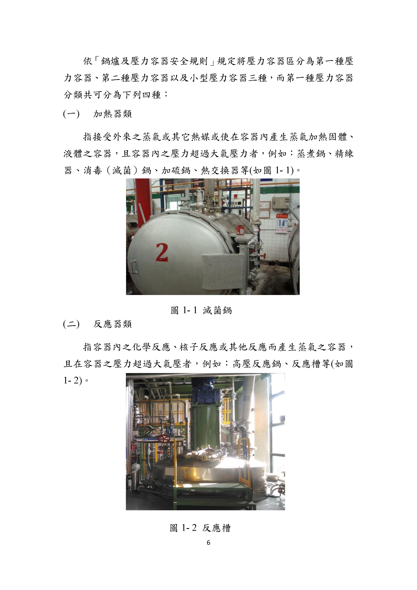 |
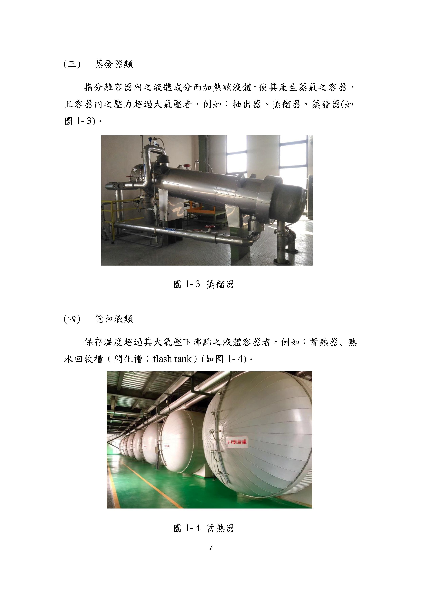 |
{kind=link}
{kind=link}
第一種壓力容器操作管理
- 應僱用專任操作人員 (經訓練合格或技能檢定)。
- 同一作業場所有二座以上，應指派第一種壓力容器作業主管。
- 操作人員應監視溫度、壓力，防止超壓，保持安全裝置正常，並保持冷卻裝置正常。
壓力容器安全閥管理 (第30條)
- 安全閥應調整於最高使用壓力以下吹洩。
- 設有二具以上者，至少一具於最高使用壓力以下，其餘可調整至最高使用壓力之 1.03 倍以下。
- 壓力表刻度板應明顯標示最高使用壓力位置。
- 壓力表應防止振動、凍結及超過 80℃。
問題研討
高壓氣體
- 哪些設備應設置防液堤？
- 儲存能力5公噸液化溴甲烷儲槽，防液堤外距離L值？
- 防液堤內側得設置之設備 (列舉6項)。
- 哪些設備應設置防液堤？
鍋爐及壓力容器：勞工從事壓力容器清掃、修理、保養，雇主應辦理事項？
起重升降機具：移動式起重機乘載勞工從事超過20公尺作業，允許之特殊情況 (列舉4種)？
起重升降機具：特殊條件下允許乘載勞工時，搭乘設備應符合哪些規定 (列舉2項)？
移動式起重機：垂直高度20公尺以上高處作業，允許乘載勞工之但書規定為何？
參考文獻
- 職業安全衛生法 (108年)
- 高壓氣體勞工安全規則 (111年)
- 起重升降機具安全規則 (109年)
- 鍋爐及壓力容器安全規則 (103年)
- 危險性機械及設備安全檢查規則 (105年)
- 起重機吊掛搭乘設備搭載或吊升人員作業注意事項
- 危險性設備(第一種壓力容器、高壓氣體特定設備)自動檢查參考手冊
知識傳遞完成
有任何問題歡迎討論，TKS.
😎

prepared by Peter Ho.